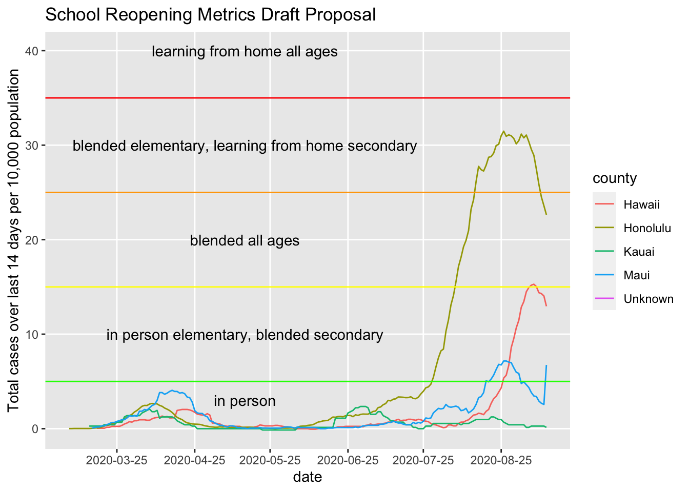

There are a number of school reopening metrics around the country. They use some figures that are not so easy to gather on existing dashboards. To help visualize how Hawaii stacks up against the suggested metrics, I pulled the data and calculated the metrics for our state.
The first mainland metric that I used came from Minnesota’s Safe Learning Plan. They use a metric of total cases in the last 14 days per 10,000 population.
library(tidyverse)## ── Attaching packages ────────────────────────────── tidyverse 1.3.0 ──## ✓ ggplot2 3.3.2 ✓ purrr 0.3.4
## ✓ tibble 3.0.3 ✓ dplyr 1.0.2
## ✓ tidyr 1.1.2 ✓ stringr 1.4.0
## ✓ readr 1.3.1 ✓ forcats 0.5.0## ── Conflicts ───────────────────────────────── tidyverse_conflicts() ──
## x dplyr::filter() masks stats::filter()
## x dplyr::lag() masks stats::lag()library(zoo)##
## Attaching package: 'zoo'## The following objects are masked from 'package:base':
##
## as.Date, as.Date.numericI downloaded county populations estimates from census.hawaii.gov.
counties_hi <- data.frame(county = c("Honolulu", "Hawaii", "Kauai", "Maui"),
population = c(974563, 201513, 72293, 167503))I then pulled county level cases from NY Times database.
cases <- readr::read_csv("https://raw.githubusercontent.com/nytimes/covid-19-data/master/us-counties.csv")## Parsed with column specification:
## cols(
## date = col_date(format = ""),
## county = col_character(),
## state = col_character(),
## fips = col_character(),
## cases = col_double(),
## deaths = col_double()
## )timestamp()## ##------ Sun Sep 13 12:58:23 2020 ------##To make the data more manageable, I Filtered for only Hawaii cases.
cases <- cases %>% filter(state == "Hawaii")Because the cases are given as cumulative numbers, I had to calculate new cases each day. I also calculated rolling 14 day numbers.
cases %>%
# filter(date < "2020-09-12") %>%
left_join(counties_hi, by = "county") %>%
group_by(county) %>%
arrange(date) %>%
mutate(cases_14d_ago = lag(cases, 14, default = 0)) %>%
mutate(total_cases_14d_per10k = (cases - cases_14d_ago)/population*10000) %>%
ggplot(aes(x = date, y = total_cases_14d_per10k, color = county)) +
geom_line() +
ggtitle("School Reopening Metrics Draft Proposal") +
ylab("Total cases over last 14 days per 10,000 population") +
xlab("date") +
geom_hline(aes(yintercept = c(5)), color = "green") +
geom_hline(aes(yintercept = c(15)), color = "yellow") +
geom_hline(aes(yintercept = c(25)), color = "orange") +
geom_hline(aes(yintercept = c(35)), color = "red") +
annotate("text", x = rep(as.Date("2020-05-15"),5),
y = c(-2, 5, 15, 25, 35)+5,
label = c("in person",
"in person elementary, blended secondary",
"blended all ages",
"blended elementary, learning from home secondary",
"learning from home all ages")) +
scale_x_date(breaks = function(x) seq.Date(from = min(x),
to = max(x),
by = "1 months"),
minor_breaks = function(x) seq.Date(from = min(x),
to = max(x),
by = "1 month"))## Warning: Removed 30 row(s) containing missing values (geom_path).
Uh, looks like there are some data issues here looking at the Maui spike.
cases %>% filter(date == "2020-09-12")## # A tibble: 4 x 6
## date county state fips cases deaths
## <date> <chr> <chr> <chr> <dbl> <dbl>
## 1 2020-09-12 Hawaii Hawaii 15001 579 3
## 2 2020-09-12 Honolulu Hawaii 15003 9616 84
## 3 2020-09-12 Kauai Hawaii 15007 58 0
## 4 2020-09-12 Maui Hawaii 15009 443 9